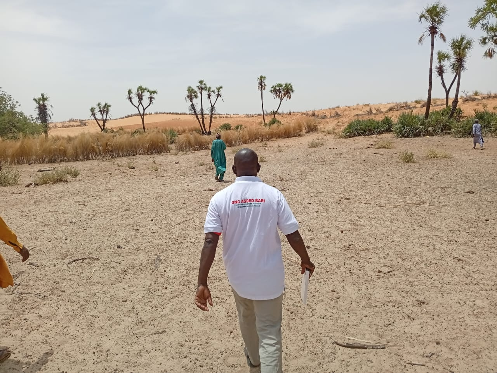

Bienvenue sur le site officiel de l'ONG ASDED/BARI
Basée à Gouré (Région de Zinder, Niger), l'ONG ASDED/BARI s'engage au quotidien pour le développement socio-économique, la sécurité alimentaire, la cohésion sociale et la résilience des populations rurales et urbaines du Niger.
À Propos de l'ONG
Informations Légales & Institutionnelles
- Siège social : Gouré, Région de Zinder, République du Niger
- Arrêté d'autorisation : Arrêté Ministériel n°0688/MISPD/ACR/DGAPJ/DLP du 15 octobre 2014
- Numéro d'Identification Fiscale (NIF) : 130249/A
- Protocole d'Accord Type (PAT) : N° 000228/2022/MAT/DC/DONGAD (Valable 2022–2026)
- Boîte Postale : BP 229, Gouré
Notre Vision & Mission
Promouvoir des actions solidaires visant l'auto-promotion des communautés vulnérables à travers des projets durables en agriculture, environnement, santé, éducation et gouvernance locale.
Nos Domaines d'Intervention
- Agriculture Durable & Sécurité Alimentaire : Appui aux producteurs, maraîchage, fixation des dunes et protection des terres.
- Environnement & Changement Climatique : Reboisement, lutte contre la désertification et gestion durable des ressources naturelles.
- Éducation & Formation : Alphabétisation, renforcement des capacités des jeunes et des femmes.
- Santé & Eau, Hygiène, Assainissement (EHA) : Sensibilisation sanitaire, accès à l'eau potable et hygiène communautaire.
- Cohésion Sociale & Paix : Prévention des conflits et promotion de la gouvernance inclusive.
Nos Actions sur le Terrain
Découvrez en images quelques-unes des activités menées sur le terrain par nos équipes et partenaires :

Mission de suivi terrain et évaluation des activités

Sensibilisation communautaire et accompagnement local

Projet de restauration des terres et protection de l'environnement